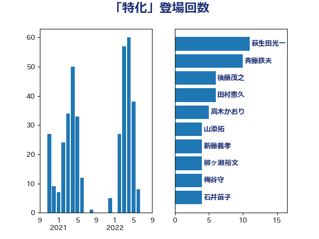

単語「特化」

| 萩生田光一 | 自由民主党 | 11 回 |
| 斉藤鉄夫 | 公明党 | 10 回 |
| 後藤茂之 | 自由民主党 | 6 回 |
| 田村憲久 | 自由民主党 | 6 回 |
| 高木かおり | 日本維新の会 | 5 回 |
| 山添拓 | 日本共産党 | 4 回 |
| 新藤義孝 | 自由民主党 | 4 回 |
| 柳ヶ瀬裕文 | 日本維新の会 | 4 回 |
| 梅谷守 | 立憲民主党 | 4 回 |
| 石井苗子 | 日本維新の会 | 4 回 |
| 音喜多駿 | 日本維新の会 | 4 回 |
| 中谷真一 | 自由民主党 | 3 回 |
| 伊藤孝恵 | 国民民主党 | 3 回 |
| 吉良よし子 | 日本共産党 | 3 回 |
| 和田有一朗 | 日本維新の会 | 3 回 |
| 小林鷹之 | 自由民主党 | 3 回 |
| 山下貴司 | 自由民主党 | 3 回 |
| 岸信夫 | 自由民主党 | 3 回 |
| 平木大作 | 公明党 | 3 回 |
| 舩後靖彦 | れいわ新選組 | 3 回 |
| 野田聖子 | 自由民主党 | 3 回 |
| 長妻昭 | 立憲民主党 | 3 回 |
| 関芳弘 | 自由民主党 | 3 回 |
| おおつき紅葉 | 立憲民主党 | 2 回 |
| 中司宏 | 日本維新の会 | 2 回 |
| 串田誠一 | 日本維新の会 | 2 回 |
| 伊藤俊輔 | 立憲民主党 | 2 回 |
| 坂本哲志 | 自由民主党 | 2 回 |
| 塩田博昭 | 公明党 | 2 回 |
| 大西健介 | 立憲民主党 | 2 回 |
| 奥野総一郎 | 立憲民主党 | 2 回 |
| 宮本徹 | 日本共産党 | 2 回 |
| 小宮山泰子 | 立憲民主党 | 2 回 |
| 尾身朝子 | 自由民主党 | 2 回 |
| 末松信介 | 自由民主党 | 2 回 |
| 柚木道義 | 立憲民主党 | 2 回 |
| 梶山弘志 | 自由民主党 | 2 回 |
| 池畑浩太朗 | 日本維新の会 | 2 回 |
| 清水貴之 | 日本維新の会 | 2 回 |
| 熊谷裕人 | 立憲民主党 | 2 回 |
| 田村まみ | 国民民主党 | 2 回 |
| 福島みずほ | 社会民主党 | 2 回 |
| 笠井亮 | 日本共産党 | 2 回 |
| 自見はなこ | 自由民主党 | 2 回 |
| 舟山康江 | 国民民主党 | 2 回 |
| 茂木敏充 | 自由民主党 | 2 回 |
| 藤原崇 | 自由民主党 | 2 回 |
| 西村智奈美 | 立憲民主党 | 2 回 |
| 長坂康正 | 自由民主党 | 2 回 |
| 須藤元気 | 無所属 | 2 回 |
| 高橋千鶴子 | 日本共産党 | 2 回 |
| 三木亨 | 自由民主党 | 1 回 |
| 上川陽子 | 自由民主党 | 1 回 |
| 上杉謙太郎 | 自由民主党 | 1 回 |
| 上田清司 | 国民民主党 | 1 回 |
| 下野六太 | 公明党 | 1 回 |
| 中山展宏 | 自由民主党 | 1 回 |
| 中川正春 | 立憲民主党 | 1 回 |
| 亀岡偉民 | 自由民主党 | 1 回 |
| 井坂信彦 | 立憲民主党 | 1 回 |
| 今村雅弘 | 自由民主党 | 1 回 |
| 今枝宗一郎 | 自由民主党 | 1 回 |
| 務台俊介 | 自由民主党 | 1 回 |
| 北神圭朗 | 無所属 | 1 回 |
| 古賀之士 | 立憲民主党 | 1 回 |
| 古賀友一郎 | 自由民主党 | 1 回 |
| 吉田統彦 | 立憲民主党 | 1 回 |
| 吉田豊史 | 日本維新の会 | 1 回 |
| 吉良州司 | 無所属 | 1 回 |
| 土屋品子 | 自由民主党 | 1 回 |
| 城井崇 | 立憲民主党 | 1 回 |
| 塩川鉄也 | 日本共産党 | 1 回 |
| 塩村あやか | 立憲民主党 | 1 回 |
| 大岡敏孝 | 自由民主党 | 1 回 |
| 大島敦 | 立憲民主党 | 1 回 |
| 大石あきこ | れいわ新選組 | 1 回 |
| 太栄志 | 立憲民主党 | 1 回 |
| 奥下剛光 | 日本維新の会 | 1 回 |
| 守島正 | 日本維新の会 | 1 回 |
| 安達澄 | 無所属 | 1 回 |
| 小沢雅仁 | 立憲民主党 | 1 回 |
| 小熊慎司 | 立憲民主党 | 1 回 |
| 山本太郎 | れいわ新選組 | 1 回 |
| 山田勝彦 | 立憲民主党 | 1 回 |
| 山際大志郎 | 自由民主党 | 1 回 |
| 岩渕友 | 日本共産党 | 1 回 |
| 岸田文雄 | 自由民主党 | 1 回 |
| 島尻安伊子 | 自由民主党 | 1 回 |
| 平山佐知子 | 無所属 | 1 回 |
| 新垣邦男 | 立憲民主党 | 1 回 |
| 早稲田ゆき | 立憲民主党 | 1 回 |
| 末次精一 | 立憲民主党 | 1 回 |
| 杉久武 | 公明党 | 1 回 |
| 杉尾秀哉 | 立憲民主党 | 1 回 |
| 東徹 | 日本維新の会 | 1 回 |
| 林芳正 | 自由民主党 | 1 回 |
| 柴田巧 | 日本維新の会 | 1 回 |
| 森本真治 | 立憲民主党 | 1 回 |
| 横沢高徳 | 立憲民主党 | 1 回 |
| 櫛渕万里 | れいわ新選組 | 1 回 |
| 津島淳 | 自由民主党 | 1 回 |
| 渡辺孝一 | 自由民主党 | 1 回 |
| 源馬謙太郎 | 立憲民主党 | 1 回 |
| 牧原秀樹 | 自由民主党 | 1 回 |
| 玉木雄一郎 | 国民民主党 | 1 回 |
| 田所嘉徳 | 自由民主党 | 1 回 |
| 田村智子 | 日本共産党 | 1 回 |
| 田村貴昭 | 日本共産党 | 1 回 |
| 白石洋一 | 立憲民主党 | 1 回 |
| 石井章 | 日本維新の会 | 1 回 |
| 石垣のりこ | 立憲民主党 | 1 回 |
| 石川博崇 | 公明党 | 1 回 |
| 石川大我 | 立憲民主党 | 1 回 |
| 石川香織 | 立憲民主党 | 1 回 |
| 礒崎哲史 | 国民民主党 | 1 回 |
| 神谷裕 | 立憲民主党 | 1 回 |
| 稲富修二 | 立憲民主党 | 1 回 |
| 稲津久 | 公明党 | 1 回 |
| 穂坂泰 | 自由民主党 | 1 回 |
| 笠浩史 | 無所属 | 1 回 |
| 篠原豪 | 立憲民主党 | 1 回 |
| 紙智子 | 日本共産党 | 1 回 |
| 芳賀道也 | 国民民主党 | 1 回 |
| 若宮健嗣 | 自由民主党 | 1 回 |
| 荒井優 | 立憲民主党 | 1 回 |
| 葉梨康弘 | 自由民主党 | 1 回 |
| 藤田文武 | 日本維新の会 | 1 回 |
| 西田実仁 | 公明党 | 1 回 |
| 谷合正明 | 公明党 | 1 回 |
| 豊田俊郎 | 自由民主党 | 1 回 |
| 赤羽一嘉 | 公明党 | 1 回 |
| 輿水恵一 | 公明党 | 1 回 |
| 逢坂誠二 | 立憲民主党 | 1 回 |
| 進藤金日子 | 自由民主党 | 1 回 |
| 里見隆治 | 公明党 | 1 回 |
| 野上浩太郎 | 自由民主党 | 1 回 |
| 金城泰邦 | 公明党 | 1 回 |
| 金子恵美 | 立憲民主党 | 1 回 |
| 長友慎治 | 国民民主党 | 1 回 |
| 阿部司 | 日本維新の会 | 1 回 |
| 阿部知子 | 立憲民主党 | 1 回 |
| 馬場伸幸 | 日本維新の会 | 1 回 |
| 馬場雄基 | 立憲民主党 | 1 回 |
| 高橋光男 | 公明党 | 1 回 |
| 高野光二郎 | 自由民主党 | 1 回 |